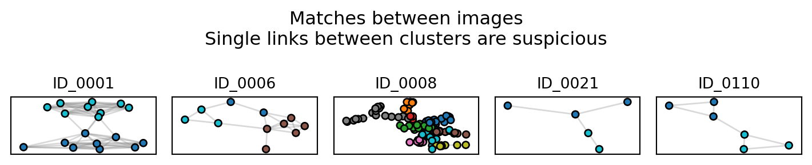

import gdown
import zipfile
# make the file url with an f string
file_id = '1puM7YBTVFbIAT3xNBQV1g09K0bMGLk1y'
file_url = f'https://drive.google.com/uc?id={file_id}'
# download the demo data
gdown.download(file_url, quiet=False, use_cookies=False)
# extract the files to the working directory
with zipfile.ZipFile('original_images.zip', 'r') as zip_ref:
zip_ref.extractall('working_dir')Getting started with Pyseter
Here we present a quick overview of the main functions of Pyseter with a demo dataset.
TipR user tip
Throughout we’ll provide tips for R users who are new to Python. If this is you, check out Installation - New to Python instructions.
Installation
If you haven’t already, install some form of conda. Anaconda is probably the easiest to install, but we are personally partial to miniforge. Of course, you are also welcome to use any other package management tool, such as uv, pixi, or good old fashioned venv.
Once you’ve installed conda, open the command line interface (e.g., the miniforge prompt or the terminal). Then you’ll need to do several things:
- Create the conda environment you’ll be using
- Active the environment and install
pip - Install packages
- Pytorch, which will depend on your operating system and GPU availability
- gdown (for downloading the the dataset)
- ipykernel (optional, useful if using Jupyter Lab or Jupyter Notebook)
- pyseter
Below is an example of the commands necessary to install on a Windows machine equipped with an NVIDIA GPU.
conda create -n pyseter_env -y # create new environment
source activate pyseter_env # activate it
conda install pip -y # pip is necessary to install torch and pyseter
pip install torch torchvision --index-url https://download.pytorch.org/whl/cu128
pip install pyseter gdown ipykernel==6.30.1 ipywidgets
python -m ipykernel install --user --name pyseter_env --display-name "Python (Pyseter)"Dataset
The images in this example were collected during a multi-year photo-ID survey of spinner dolphins in Hawaiʻi. Every image collected during the study was graded for quality and distinctiveness. This example dataset only includes images of sufficient quality that have been cropped to the identifying mark—the dorsal fin. This example includes 208 images of animals without distinctive markings, and 1043 images of animals with distinctive markings.
Open a Jupyter notebook and download the data with gdown, which pulls data from Google Drive.
TipR user tip
In R, the above code block would look something like
library(gdown)
download()Imports work a little differently in Python. First, we need tell Python that this package is available for imports, import pyseter, then we need to explicitly call the function from the library pyseter.verify_pytorch(). To an R user, this can feel overly wordy. Nevertheless, this wordiness helps keep the global environment clean. Whereas R sessions frequently have to deal with masking names, this rarely happens in Python.
TipR user tip
This block uses two fancy Python concepts, with (or the context manager), and the f'' string. The f'' string allows us to substitute the file_id into the file_url. The with statement is a way to safely open and close a connection to a file.
Working with Pyseter
Now we’re ready to work in Pyseter. First, verify that your PyTorch installation. This will also let you know how fast (or slow) you can expect Pyseter to be.
import pyseter
pyseter.verify_pytorch():) PyTorch 2.10.0 detected
:) Apple Silicon (MPS) GPU availableThe demo dataset is organized into subfolders by encounter.
working_dir
└── original_images
├── enc0
│ ├── 0a49385ef8f1e74a.jpg
├── 1e105f9659c12a66.jpg
...
│ └── f5093b3089b44e67.jpg
└── enc12
├── 0b5c44f167d89d6c.jpg
├── 1e0c186da31a53c4.jpg
...
└── f9bb41e7ce0d672d.jpgOur lives will be a little easier if we do two things: move all these images to a flat folder, i.e., with no subfolders, and create a .csv that indicates which image belongs to which encounter (i.e., a map from image to encounter). The prep_images() function does just that.
from pyseter.sort import prep_images
working_dir = 'working_dir'
original_image_dir = working_dir + '/original_images'
# new, flattened directory containing every image
image_dir = working_dir + '/all_images'
prep_images(original_image_dir, all_image_dir=image_dir)Copied 1251 images to: working_dir/all_images
Saved encounter information to: /Users/PattonP/source/repos/pyseter/docs/working_dir/encounter_info.csvWe can look at a few random images with matplotlib.
from PIL import Image
import os
import matplotlib.pyplot as plt
import numpy as np
# select a random id to plot
rng = np.random.default_rng(seed=17)
images = os.listdir(image_dir)
# create a figure where each subplot is an image
column_count = 3
row_count = 7
fig, axes = plt.subplots(row_count, column_count, tight_layout=True,
figsize=(9, row_count * 3))
# plot each image
for i in range(column_count * row_count):
ax = axes.flat[i]
file_name = images[i]
path = f'working_dir/all_images/{file_name}'
image = Image.open(path)
ax.imshow(image)
ax.axis('off')
Feature extraction
Identifying animals in images requires extracting feature vectors. The distance between two feature vectors tells us similarity between two images. Similar images likely contain the same individual, if the model is working.
To do so, we’ll initialize the FeatureExtractor. The only argument is the batch size, which we recommend setting to something low, like 4.
import os
from pyseter.extract import FeatureExtractor
# we'll save the results in the feature_dir
feature_dir = working_dir + '/features'
os.makedirs(feature_dir, exist_ok=True)
# initialize the extractor
fe = FeatureExtractor(batch_size=4)Using device: mps (Apple Silicon GPU)Now we can extract features. This will take a while, depending on hardware. On a machine with an NVIDIA GPU, this will take a minute or two. On a Mac, this will take around 10 minutes. Unfortunately, we have not been able to test on a PC without a GPU, but expect it to be slower than 10 minutes.
The first time you extract features with Pyseter, it will download AnyDorsal to your machine. AnyDorsal is huge (4.5GB), so be prepared!
import numpy as np
features = fe.extract(image_dir=image_dir)
# this saves the dictionary as an numpy file
out_path = feature_dir + '/features.npy'
np.save(out_path, features)
# convert keys and values to numpy arrays
filenames = np.array(list(features.keys()))
feature_array = np.array(list(features.values()))
TipR user tip
In this case, FeatureExtractor is a class and extract() is a method of that class. Classes and methods also exist in R, but operate more behind the scenes. For example, x <- data.frame() initializes an object of class data.frame, and summary(x) calls the summary method for data.frames. Python makes this relationship more explicit. For example, the equivalent Python code would be x = pandas.DataFrame() and x.summary(). The pandas library provides data frames in Python.
You can also load in features from a previously saved session.
# alternatively, load in the feature dictionary from file
import numpy as np
from pyseter.sort import load_features
out_path = feature_dir + '/features.npy'
filenames, feature_array = load_features(out_path)Clustering individuals
Next, we can cluster individuals into proposed IDs. One simple method for doing so is to say that any two images with similarity scores above a match_threshold belong to the same individual (note that the similarity score is one minus the distance between two feature vectors). This creates a network where each node is an image and the connected nodes represent one proposed ID. Hence, we call this NetworkCluster
from sklearn.metrics.pairwise import cosine_similarity
from pyseter.sort import NetworkCluster, report_cluster_results
similarity_scores = cosine_similarity(feature_array)
nc = NetworkCluster(match_threshold=0.55)
results = nc.cluster_images(similarity_scores)Following clusters may contain false positives:
['ID_0001', 'ID_0006', 'ID_0008', 'ID_0021', 'ID_0110']You can look at the results with report_cluster_results.
network_idx = results.cluster_idx
report_cluster_results(network_idx)Found 208 clusters.
Largest cluster has 128 images.In an ideal world, every image of the same individual would be connected in the network, and not connected to images of any other individuals. As such, the ideal network would look like a bunch of blobs. As such, we might be suspicious of clusters that look like barbells, i.e., two blobs connected by one link. That one link might be a false positive, linking two distinct identities. The plot_suspicious function plots things that might look like barbells.
results.plot_suspicious()
Sorting individuals into folders
Now, we might want to inspect these proposed ID. One method is to chuck the IDs into a table, i.e., a DataFrame.
import pandas as pd
id_df = pd.DataFrame({'image': filenames, 'proposed_id': network_idx})
# join with the encounter information using "encounter" as a key
encounter_info = pd.read_csv(working_dir + '/encounter_info.csv')
id_df = id_df.merge(encounter_info)
id_df.head()| image | proposed_id | encounter | |
|---|---|---|---|
| 0 | 2c8750b066372ab5.jpg | ID-0000 | enc8 |
| 1 | 568fc1d376b616a6.jpg | ID-0001 | enc8 |
| 2 | ddeb347716d7861c.jpg | ID-0002 | enc6 |
| 3 | b65f9334b05f48f4.jpg | ID-0003 | enc0 |
| 4 | d84aefa4d99d6f9a.jpg | ID-0004 | enc4 |
But this isn’t particularly satisfying, since we can’t actually see the IDs. Probably the easiest way to to sort the images into folders then explore them with the file explore (e.g., Finder on Mac), or with a program like ACDSee. We can do so with sort_images.
from pyseter.sort import sort_images
# make an output directory
sorted_dir = working_dir + '/sorted_images'
os.makedirs(sorted_dir, exist_ok=True)
sort_images(id_df, all_image_dir=image_dir, output_dir=sorted_dir)Sorted 1251 images into 311 folders.We can also plot some images with matplotlib, if that’s your thing.
from PIL import Image
import matplotlib.pyplot as plt
# select a random id to plot
rng = np.random.default_rng(seed=17)
random_id = rng.choice(id_df.proposed_id)
# collect all the images for that id
id_info = id_df.loc[id_df.proposed_id == random_id].sort_values('encounter').reset_index(drop=True)
image_count = len(id_info)
# create a figure where each subplot is an image
column_count = 3
row_count = (image_count + column_count - 1) // column_count
fig, axes = plt.subplots(row_count, column_count, tight_layout=True,
figsize=(9, row_count * 3))
# plot each image
for i, row in id_info.iterrows():
ax = axes.flat[i]
path = f'working_dir/all_images/{row.image}'
image = Image.open(path)
ax.imshow(image)
ax.set_title(row.encounter)
ax.axis('off')
fig.text(0.5, 1.0, f'Proposed ID: {random_id}', ha='center', va='bottom',
fontsize=16)
# delete any unnecessary subplots
for i in range(image_count, row_count * column_count):
axes.flat[i].remove()